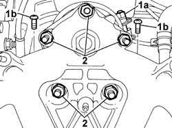
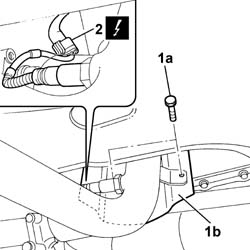
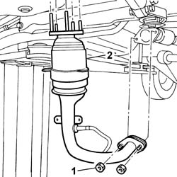
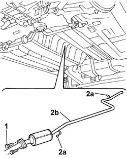
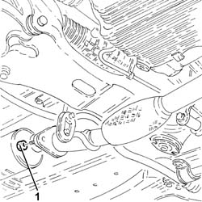
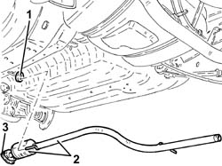

1080B62 catalytic converter - r + r
- Path
- Procedures > 10 ENGINE > 1080 EMISSION CONTROL SYSTEM > 1080B exhaust emission control system > 1080B62 catalytic converter - r + r
- Kind
- repair procedure (removal / refitting; the operation number is the code)
- Applies to
- engines: 1.6 16v, 1.3 JTD 16V, 1.9 JTD 8V, 1.9 DIESEL; all production periods
- Interactive page
- https://sloeber94.github.io/elrnDB-fDbl/en/#/2584367
Applies to: engines: 1.6 16v; all production periods
 Removing
Removing
 Refitting
RefittingPlace the vehicle on a lift.
Disconnect the battery negative terminal.
 | Name | Connector |
|---|---|---|
- | Battery |
Op. 7055B54 PROTECTION/GUARD UNDER ENGINE - R.R.
Op. 1080B94 FRONT LAMBDA SENSOR AT CATALYTIC CONVERTER - R.R.
Op. 1072C44 EXHAUST MANIFOLD HEAT SHIELD R+R
1. Loosen nut (1a) on the catalytic converter band, undo bolts (1b) on the catalytic converter flange.
2. Undo the nuts securing the catalytic converter to the exhaust manifold.

Applies to: engines: 1.6 16v; all production periods
1. Raise the lift and undo bolts (1a) securing the lower heat shield bracket (1b) and remove.
2. Disconnect the electrical connection for the rear Lambda sensor and move the catalytic converter away from the exhaust manfold.
| Name | Connector |
|---|---|---|
2 | Lambda sensor on catalyzer |

Applies to: engines: 1.6 16v; all production periods
1. Undo the nuts securing the catalytic converter to the first exhaust pipe section.
2. Remove the catalytic converter from the engine bay.

Applies to: engines: 1.6 16v; all production periods
Refitting
RemovingPosition the retaining band on the catalytic converter so that the catalytic converter can easily be inserted in the engine bay.
Lower the lift, then partly screw in a nut on on the exhaust manfold to secure the catalytic converter.
Raise the lift, then tighten the nuts securing the first section of the exhaust manifold to the catalytic converter to the specified torque.
 | Fastening | Component | Ø | Value (daNm) |
|---|---|---|---|---|
- | Nut | INTERMEDIATE EXHAUST SILENCER | M8 | (Flange joint to catalytic converter) 3 |
Lower the lift, then tighten the nuts securing the catalytic converter to the exhaust manifold to the specified torque.
| Fastening | Component | Ø | Value (daNm) |
|---|---|---|---|---|
- | Nut | EXHAUST MANIFOLD/S | M8 | (Catalytic converter) 2.5 |
Connect the electrical connection for the rear Lambda sensor.
| Name | Connector |
|---|---|---|
- | Lambda sensor on catalyzer |
Position the lower heat shield bracket and tighten the retaining bolts.
Tighten the bolts on the catalytic converter band.
Tighten the bolts fastening the catalytic converter to the retaining flange to the specified torque.
| Fastening | Component | Ø | Value (daNm) |
|---|---|---|---|---|
- | Bolt | EXHAUST MANIFOLD/S | M8 | (Catalytic converter) 3 |
Op. 1072C44 EXHAUST MANIFOLD HEAT SHIELD R+R
Op. 1080B94 FRONT LAMBDA SENSOR AT CATALYTIC CONVERTER - R.R.
Applies to: engines: 1.3 JTD 16V; all production periods
Removing
RefittingCarry out
Op. 7055B54 PROTECTION/GUARD UNDER ENGINE - R.R..
Carry out
Applies to: engines: 1.3 JTD 16V; all production periods
Refitting
RemovingCarry out
Op. 1064A11 TURBOCHARGER WITH CATALYTIC CONVERTER - R.R..
Carry out
Applies to: engines: 1.9 DIESEL; all production periods
Removing
RefittingPosition the vehicle on a lift.
Op. 1076B20 REAR EXHAUST SILENCER - R + R
1. Unscrew the nuts securing the catalytic converter flange to the front section of the exhaust pipe.
2. Remove pins (2a) from rubber blocks (2b) on the bodyshell, then remove the rigid exhaust pipe (2c).

Applies to: engines: 1.9 DIESEL; all production periods
Refitting
RemovingPosition the rigid exhaust pipe with catalytic converter and fit the pins for the rigid pipe in the special rubber mountings.
Tighten the nuts securing the catalytic converter flange to the front section of the exhaust pipe to torque.
| Fastening | Component | Ø | Value (daNm) |
|---|---|---|---|---|
- | Nut | EXHAUST PIPE TO ENGINE | M8 | (catalytic converter) 3 |
Op. 1076B20 REAR EXHAUST SILENCER - R + R
Remove the car from the lift.
Applies to: engines: 1.9 JTD 8V; all production periods
Removing
RefittingPosition the vehicle on the ramp.
Proceed with the removal
Op. 1076B20 REAR EXHAUST SILENCER - R + R.
1. Undo the bolts fixing the exhaust pipe attachment to the engine to the catalytic converter.

Applies to: engines: 1.9 JTD 8V; all production periods
1. Release the catalytic converter from the flexible mountings.
2. Remove the catalytic converter.
3. Remove the seal.

Applies to: engines: 1.9 JTD 8V; all production periods
Refitting
RemovingRefit the catalytic converter complete with gasket and secure to the flexible mounts.
Tighten the bolts fixing the exhaust pipe attachment to the engine to the catalytic converter to the recommended torque.
| Fastening | Component | Ø | Value (daNm) |
|---|---|---|---|---|
- | Nut | EXHAUST PIPE TO ENGINE | M8 | (Catalytic converter side) 2.7 ÷ 3.3 |
Proceed with the refitting
Op. 1076B20 REAR EXHAUST SILENCER - R + R.
Remove the car from the ramp.
Topics linked from this page (7)
- 1064A11 TURBOCHARGER with CATALYTIC CONVERTER - R.R.
- 1072C44 exhaust manifold heat shield on bulkhead - r+r
- 1076B20 rear exhaust silencer - r + r
- 1080B94 front lambda probe with catalitic converter r r
- 7055B54 under-engine guard - r r
- A001 BATTERY
- K17 LAMBDA SENSOR ON CATALYZER ( ENGINE )
Topics that link to this page (7)
- B10 ENGINE DOES NOT START / UNDER NO CIRCUMSTANCES
- B20 ENGINE STARTS, AND CUTS OUT STRAIGHT AWAY
- D02 ENGINE NOT RUNNING SMOOTHLY / (LOSING POWER)
- D03 ENGINE NOT RUNNING SMOOTHLY / (IRREGULAR OPERATION)
- D05 ENGINE DOES NOT PRODUCE BEST PERFORMANCE
- Z55 CATALYZER ERROR
- 1004B10 POWER UNIT WITH MANUAL GEARBOX - R.R